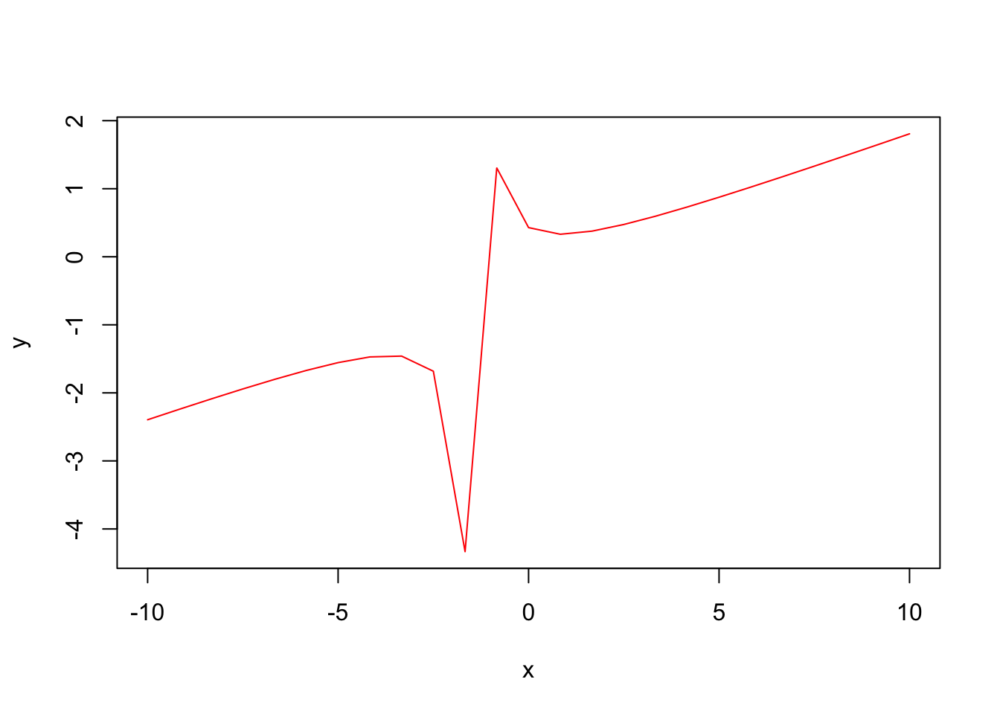
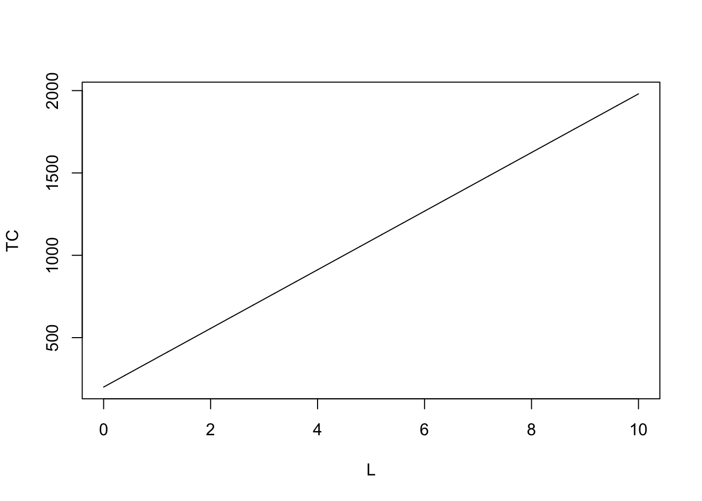
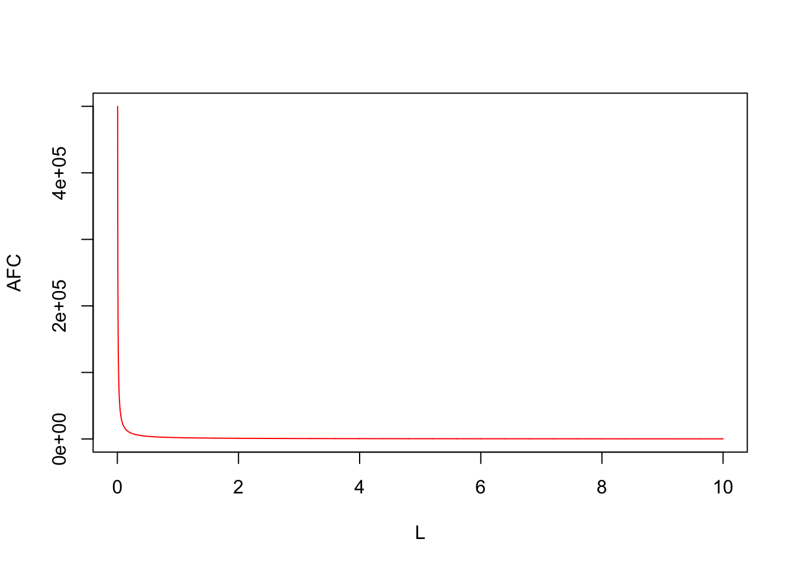
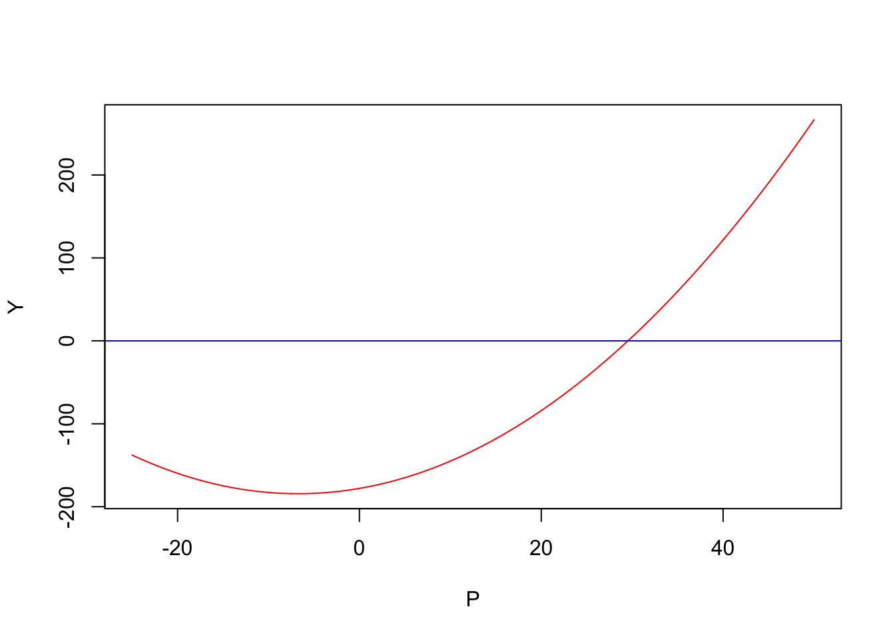
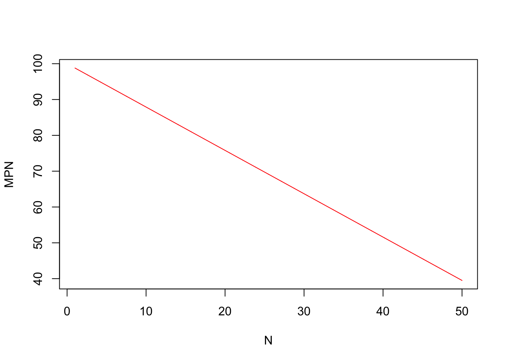

Mathematical Methods for Economics I
Fall 2020, Syllabus
Topic 1: Basic Tools of Mathematical Economics
Lec 01: Introduction to Mathematical Economics
Lec 02: Mathematical Models in Economics
Lec 03: Introduction to Set Theory
Lec 04: Relations, Functions and Economics
An example of a rational function used in class is \[y = \frac{x^{2} +3}{5x + 7}\] While it is easier to imagine the shape of common mathematical functions in economics, it might get harder. For functions such as this, we rely on computer to give us an idea about its shape. For instance, we can simulate the shape of this function for 25 values of \(x \in [-10, 10]\) to obtain the following:

What happens to this function when we get more values of \(x\) in the same range?

Thus the computer can only help us approximate the shape of the function based on the kind of questions we ask. In order to inform ourselves about the shape, we can rely on the principles of differentiation which would be explored later in the course.
Remember that we used a linear total cost function to understand the application of linear functions in economics. This cost function is peculiar. One example is as follows:

For a linear cost function we have a linear total variable cost too.

Further, even our average variable cost is linear and more so horizontal as follows:

But for a linear total cost function, our average fixed cost is actually a hyperbola of the following form:

Notice that in economics we will use a variety of rectangular and regular hyperbolas, esp. in microeconomics.
Plotting a 3D Cobb Douglas production function:
CobbDouglas <- function (L, K) {
return (L^alpha * K^beta)
}
alpha = 0.3
beta = 0.7
L <- seq(0, 10, length= 300)
K <- seq(0, 100, length= 300)
Y <- outer(L, K, CobbDouglas)
Y[is.na(Y)] <- 1
op <- par(bg = "white")
persp(L, K, Y, theta = 80, phi = 20, expand = 0.5, col = "red")
P = seq(-25, 50, length.out = 3000)
Y = 0.14*P^2 + 1.89*P - 177.9
plot(P,Y, type = "l", col = "red")
abline(h=0, col="blue")
quadraticRoots <- function(a, b, c) {
print(paste0("You have chosen the quadratic equation ", a, "x^2 + ", b, "x + ", c, "."))
discriminant <- (b^2) - (4*a*c)
if(discriminant < 0) {
return(paste0("This quadratic equation has no real numbered roots."))
}
else if(discriminant > 0) {
x_int_plus <- (-b + sqrt(discriminant)) / (2*a)
x_int_neg <- (-b - sqrt(discriminant)) / (2*a)
return(paste0("The two x-intercepts for the quadratic equation are ",
format(round(x_int_plus, 5), nsmall = 5), " and ",
format(round(x_int_neg, 5), nsmall = 5), "."))
}
else #discriminant = 0 case
x_int <- (-b) / (2*a)
return(paste0("The quadratic equation has only one root. This root is ",
x_int))
}
quadraticRoots(1, 13.207, 1276)## [1] "You have chosen the quadratic equation 1x^2 + 13.207x + 1276."## [1] "This quadratic equation has no real numbered roots."quadraticRoots(1, -40, -1200)## [1] "You have chosen the quadratic equation 1x^2 + -40x + -1200."## [1] "The two x-intercepts for the quadratic equation are 60.00000 and -20.00000."quadraticRoots(10, -400, -21000)## [1] "You have chosen the quadratic equation 10x^2 + -400x + -21000."## [1] "The two x-intercepts for the quadratic equation are 70.00000 and -30.00000."A = 1.1
N = seq(1, 50, length.out = 3000)
MPN = 100 - A^2 * N
plot(N,MPN, type = "l", col = "red")
abline(h=0, col="blue")